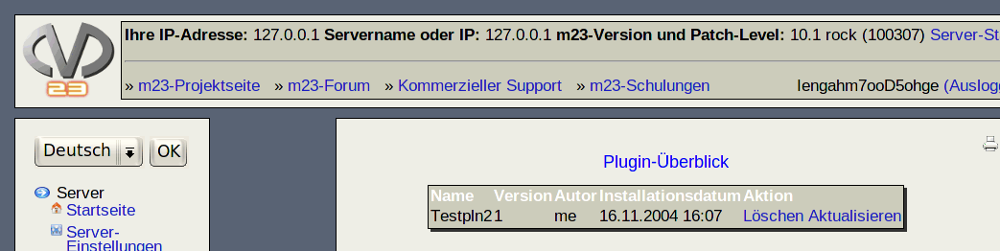

Nächste Seite:
Plugin installieren
Aufwärts:
m23-Erweiterungen: Plugins
Vorherige Seite:
m23-Erweiterungen: Plugins
Inhalt
Plugin-Überblick
Hier sehen Sie eine Übersicht aller in m23 installierten Plugins. Sie haben die Möglichkeit, bestehende Plugins zu löschen und zu aktualisieren. Klicken Sie dazu auf
Äktualisieren"
bzw.
"Löschen"
hinter dem gewünschten Plugin.

dodger 2010-04-30